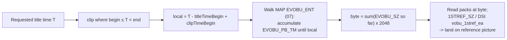
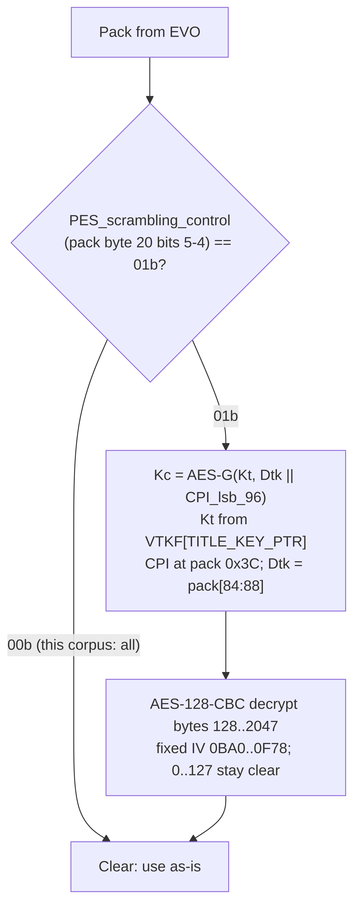

10. Playback sequence
Counts written “N/120”, “N/119”, “on N discs”, “listings”, or as named discs are over the reference corpus of 120 archived retail HD DVD images [11]. eNN are the reproducible verification experiments [12].
Patent: US20070091495A1 FIG.7 (category) and FIG.50 (Advanced startup).
Filenames on disc are VPLST$$$.XPL, ADV_OBJ, DISCID.DAT, not the patent’s
VPLIST.XML / HDDVD_TS.
§5.0 is met (05). This sheet is insert, then designed menus, then title timeline. It does not authorize shipping a demuxer without HDi. Every box in §10.0 has a gap question and an evidence answer in §10.8.
10.0 Playback flowchart
Rendered end-to-end flow. The box-numbered ASCII graphs in §10.0b are the same logic keyed to the §10.8 evidence Q&A; these diagrams are the readable overview.
Boot: insert to first title
![flowchart TD
I["Insert / open image"] --> U["Mount UDF 2.50, 2048-byte LB<br/>AVDP sector 256, metadata partition"]
U --> CAT{"ADV_OBJ/ has VPLST*.XPL?"}
CAT -->|no| C1{"HVDVD_TS/HV000I01.IFO?"}
C1 -->|yes| REF["Category 1 Standard Content<br/>out of scope: refuse"]
C1 -->|no| FAIL["fail disc"]
CAT -->|yes| AACS["Probe ANY!/ then AAC!/<br/>(absent = clear disc, legal)"]
AACS --> DID["Read ADV_OBJ/DISCID.DAT<br/>128 B, magic HDDVD-V_CONF"]
DID --> SF{"SEARCH_FLG == 0?"}
SF -->|yes| PS["Search file:///required/{contentId}/VPLST$$$.XPL<br/>on required storage (empty = success-as-absent)"]
SF -->|no| DISC1
PS --> DISC1["List ADV_OBJ/VPLST$$$.XPL (ignore .BAK)<br/>choose highest $$$"]
DISC1 -->|none| FAIL
DISC1 --> PARSE["Parse Playlist.xsd v1.0<br/>Configuration: Aperture, StreamingBuffer<br/>wipe File Cache"]
PARSE --> HASCLIP{"Playlist has<br/>PrimaryAudioVideoClip?"}
HASCLIP -->|"no (3/119 selectors)"| SEL["Run HDi; script calls<br/>Player.playlist.load(full VPLST URI)<br/>FIG.51 soft reset: wipe cache, rebuild map<br/>do NOT re-read DISCID / re-search"]
SEL --> PARSE
HASCLIP -->|yes| FPT{"FirstPlayTitle present?"}
FPT -->|yes| PLAYFPT["Play FPT start->end, normal speed<br/>video track 1 + audio track 1<br/>no PlaylistApplication; ignore user title-nav"]
FPT -->|no| T1
PLAYFPT --> T1["Enter Title 1 -> title runtime"]](_images/mermaid-8582f110a763f5c730a3a96d2541fd0f64dbdbbb.png)
Title runtime: video pipeline + HDi engine in parallel
![flowchart TD
T["Title N current"] --> MAPAPPS["Map objects on Title Timeline<br/>PlaylistApplication (whole playlist, not FPT)<br/>ApplicationSegment where begin ≤ T < end"]
MAPAPPS --> subGV
MAPAPPS --> subHDI
subgraph subGV["Video / audio pipeline"]
V1["clip src = .MAP -> sibling .EVO"] --> V2["Demux 2048-byte MPEG-2 PS packs"]
V2 --> V3["Route streams by @streamNumber (8.7)<br/>video 0xE0/0xE2/0xFD+ext0x55<br/>audio 0xBD sub CODEC_BASE|(n-1)<br/>subtitle 0xBD sub 0x20|(n-1)"]
V3 --> V4["NV_PCK first pack: PCI/DSI/GCI<br/>ADV_PCK 0x80 -> File Cache, not decoder"]
V4 --> V5["Decode (codec lib) + sub-picture RLC (8.8)"]
V5 --> V6["Scale main video into Aperture<br/>changeLayout(x,y,scale|null,crop*,time)"]
end
subgraph subHDI["HDi engine"]
H1["File Cache: open every resource src<br/>reject if listing > @size; flush at 64 MB"] --> H2["ACA extract (04): 14+(flags&0xFF)+32"]
H2 --> H3["Manifest: Region / Script / Markup / Resource"]
H3 --> H4["iHD markup: absolute boxes, PNG frames,<br/>nav* graph, p-in-div text, focus"]
H4 --> H5["Compact-ES script (UTF-16BE)<br/>load / jump(time,pause) / timers / events"]
end
V6 --> COMP["Composite graphics plane src-over scaled YCbCr<br/>PNG alpha x opacity; x-clearrect punches alpha 0<br/>zOrder stacks apps; cursor on top"]
H5 --> COMP
COMP --> LOOP["Runtime loop each tick"]
LOOP --> CUE["Clocks (page/app/title) + cue begin/end<br/>mapping window wins; unknown path = no fire"]
LOOP --> SCL["ScheduledControlList (3.9a)<br/>PauseAt@titleTime freezes timeline<br/>Event@titleTime -> addEventListener"]
LOOP --> RC["Remote: nav* move focus; Enter/accessKey<br/>-> state:actioned -> event -> script"]
RC --> ACT{"Script action?"}
ACT -->|"jump(time,false)"| SEEK["Seek (see seek diagram); play unless paused"]
ACT -->|"playlist.load(URI)"| RELOAD["Soft reset to new VPLST"]
ACT -->|none| LOOP
SEEK --> LOOP
CUE --> ENDCHK{"Title Timeline reached<br/>exclusive titleTimeEnd / titleDuration?"}
ENDCHK -->|no| LOOP
ENDCHK -->|yes| ONEND{"Title@onEnd set?"}
ONEND -->|yes| NEXT["Jump to that Title id -> title runtime"]
ONEND -->|no| STOP["Stop (script may still load/jump)"]](_images/mermaid-de2cb5e4ae2b2de3d9ff9dec644cf21dd85555f9.png)
Seek (time to byte)

AACS pack (licensed / encrypted disc only)

10.0b Control flow (box-numbered for §10.8)
Two graphs. The first is “open a disc.” The second is “run the designed menu” on a title. Boxes are numbered for §10.8.
Open a disc (FIG.7 + FIG.50)
[A1] treat medium as 2048-byte UDF 2.50 (AVDP sector 256, metadata partition)
|
v
[A2] ADV_OBJ/ contains VPLST*.XPL (that directory, not subdirs)?
| no --> [A2b] HVDVD_TS/HV000I01.IFO ? --yes--> Category 1, refuse
| yes \--no--> fail disc
v
[A3] probe ANY!/ then AAC!/ (missing AACS dir is legal)
|
v
[A4] read ADV_OBJ/DISCID.DAT (128 B, HDDVD-V_CONF)
|
v
[A5] SEARCH_FLG == 0 ?
| yes --> [A5b] search file:///required/{contentId}/VPLST$$$.XPL
| (empty P-storage is success-as-absent, not a fail)
+<--------+
v
[A6] list ADV_OBJ/VPLST$$$.XPL only (ignore .BAK); open highest $$$
| none --> fail disc
v
[A7] parse Playlist.xsd v1.0 (Forum namespace)
|
v
[A8] apply Configuration (Aperture, StreamingBuffer); wipe File Cache
|
v
[A9] this XPL has PrimaryAudioVideoClip?
| no --> [A9b] HDi IPlaylist.load(full file:/// URI)
| FIG.51: wipe cache, rebuild mapping; do not re-read DISCID
| do not re-run highest-$$$ search; loop to [A7] on the new XPL
v yes
[A10] FirstPlayTitle if present (no PlaylistApplication; tracks 1+1; then Title 1)
|
v
[A11] Title 1: enter §10.0 menu graph + §10.3 video
116/119 Advanced discs skip [A9b]. Three selectors
(MATRIX_REVOLUTIONS 099, BLADE_RUNNER 002, TRAINING_DAY 003) take [A9b].
10.1 Insert → category
mount UDF 2.50 volume
if ADV_OBJ has VPLST*.XPL (directory itself, not subdirs):
Category 2 (or 3) → 10.2
else if HVDVD_TS/HV000I01.IFO exists:
Category 1 → Standard Content (out of scope)
else:
failure
10.2 Advanced startup (FIG.50)
Read
ADV_OBJ/DISCID.DAT→PROVIDER_ID,CONTENT_ID,SEARCH_FLG.Display mode: video → VPLST search; audio-only → APLST (unused here).
VPLST search:
if
SEARCH_FLG == 0: also search persistent storage forVPLST000.XPL…999if
SEARCH_FLG == 1: skip persistent storagesearch
ADV_OBJ/(not subdirectories)open the highest
$$$
Apply
Playlist/Configuration(StreamingBuffer, Aperture). Wipe File Cache.Build Title Timeline from
Title/FirstPlayTitle/Chapter/ clip mappings.Load into File Cache: Manifest, markup, script, fonts, images, TMAPs needed before start. Init Primary Video Player with
HVA00001.VTI+ clip TMAP(s).Start Title Timeline.
None found → failure.
116/119 discs: the highest playlist already contains PrimaryAudioVideoClip.
3/119: highest is a selector app (MATRIX_REVOLUTIONS 099, BLADE_RUNNER 002,
TRAINING_DAY 003); spec boot requires HDi
Player.playlist.load("file:///dvddisc/ADV_OBJ/VPLST$$$.XPL").
Each has a lower-numbered XPL with PrimaryAudioVideoClip (e14 A97).
FIG.51 (pages/page-051.png): after that load, soft reset to S63 (re-init
object mapping + title timeline). It does not re-run S61 (highest-number
search) or S62 (config). Sheet 05 §5.7: the body of
FIG.51 wipes File Cache then loads the new XPL (drawing vs body: body wins).
FirstPlayTitle is the first clip inside the chosen playlist, not the boot file.
If present, play it to the end of its timeline (normal speed, tracks 1+1), then
Title 1. PlaylistApplication starts on Title 1, not on FirstPlayTitle.
SEARCH_FLG=0 with no persistent-storage VPLST: search comes up empty, then
the disc ADV_OBJ list is used (highest $$$ among files that exist).
URI: file:///required/{contentId}/VPLST$$$.XPL (05 §5.8).
10.3 Play a title
HDi apps scheduled on the title (PlaylistApplication after FirstPlayTitle,
ApplicationSegment in range) run. Skipping them is not this product.
parse chosen VPLST$$$.XPL
select Title (or FirstPlayTitle)
load File Cache resources for PlaylistApplication (not on FPT) and
ApplicationSegment objects in range
for each PrimaryAudioVideoClip in timeline order:
open src MAP # file:///dvddisc/HVDVD_TS/FOO.MAP
open sibling EVO # FOO.EVO (confirm via EVOBI)
codec = MediaAttributeList[Video@mediaAttr]
demux 2048-byte packs from EVO
select streams by @streamNumber -> PES stream_id/sub_stream_id (08 §8.7):
video 0xE0/0xE2/0xFD+0x55 ; audio 0xBD sub CODEC_BASE|(n-1) ; subtitle 0xBD 0x20|(n-1)
route ADV_PCK 0x80 to File Cache
composite graphics plane over scaled main video
seamless="true" → decoder connection flag only
onEnd → jump to that Title id
Track selection: Audio@track / Subtitle@track + TrackNavigationList langcodes.
10.4 Seek
T = requested title time (HH:MM:SS:FF)
clip = PrimaryAudioVideoClip where titleTimeBegin ≤ T < titleTimeEnd
local = T − titleTimeBegin + clipTimeBegin
byte_off = map_seek(MAP, local) # 07_map.md
read packs from EVO at byte_off
optional: DSI.vobu_1stref_ea / MAP 1STREF_SZ to land on a reference picture
10.5 Pack path to a demuxer
open volume
classify Category 2
select playlist / title
time → MAP → EVO byte offset
read N × 2048 MPEG-2 PS packs
optional: AACS decrypt bytes 128–2047 if Volume ID is available
File Cache from ACA and ADV_PCK 0x80 (required for menus; pack layout
specified in [08](08_evo.md) §8.6). Always load `src`; muxed bytes match the
file when present (`STALINGRAD` `logo.EVO`).
HDi engine consumes Manifest/markup/script (gate: [05](05_manifest_hdi.md) §5.0 **met**)
Do not wrap a DVD PGC navigator. The playlist is MPLS-shaped, not PGC-shaped. Do not feed 6144-byte Blu-ray aligned units.
10.6 AACS (if ANY! or AAC! present)
MKBROM → Media Key
Volume ID from drive (READ DISC STRUCTURE 80h) → Kvu
VTKF whose PLAYLIST_NAME is this VPLST$$$ → Kt
each encrypted pack:
CPI = 16 bytes at pack offset 0x3C in that EVOBU's NV_PCK
Kc = AES-G(Kt, Dtk || CPI_lsb_96)
CBC-decrypt bytes 128–2047
Primary Video Player still sees a 2048-byte MPEG-2 PS
A research demuxer can skip this and still enumerate titles and parse structure. A licensed player shall not skip MKB / cert / CHT boot.
10.7 What is specified vs not
Specified |
Not specified / uncloseable |
|---|---|
UDF 2.50, roots, Category 2 |
Official HD DVD medium MMC probe |
DISCID, highest-VPLST boot, 3 selectors, FIG.50 P-storage URI grammar |
On-device P-storage directory dump (0 specimens) |
XPL titles/clips/chapters/tracks; |
Firmware vs FIG.50 (no RE) |
Used iHD + |
Unused XSD attrs ( |
MAP |
AACS sequence-key ( |
ILVU_ENT at |
|
VTI MAT, ATRI |
ATRI palettes; EVOBI+282 units |
NV_PCK GCI+PCI+DSI GI; PCI may be omitted; CPI at pack |
Pack stuffing moving a hard-coded byte 20 / Dtk@84 |
ADV_PCK |
Screenshot-calibrated OpenType hinting (em scale is specified) |
ACA 32-byte header + |
ACA AACS-sidecar 283-byte internals; |
AACS dirs, VTKF Table 3-8, VTUF 144 B / |
Volume ID from ISO; CHT bodies; VTUF |
Category 3 / |
0/120; uncloseable as a format |
Firmware vs FIG.50 is uncloseable (no RE). Catalog:
http://hd-dvd.org/firmware.html
(intermittent: 200 then 503 on 2026-09-08). Stable copy:
https://web.archive.org/web/20231210144123/http://hd-dvd.org/firmware.html
Blobs live at http://hd-dvd.org/files/firmware/ (zip / iso / exe) when the
origin is up; this specification does not mirror them and does not reverse-engineer
them. While HTTP 200: HD-A35-4000N.zip was 40 511 916 bytes (Content-Type: application/zip) and HD-XA2 Ver3003.iso was 42 905 600 bytes, matching the
catalog sizes.
OEM release notes on that page (and Toshiba notice
https://web.archive.org/web/20080820101507/http://tacp.toshiba.com/tacpassets-images/notices/hddvd3firmwarev3.asp
, Onkyo PDF http://hd-dvd.org/documents/firmware/V2.8_DVHD805_2_US.pdf)
describe 1080p/24, HDMI, network download of web-enabled disc extras, and
a 3-hour pause timeout (“Advanced playback function”). They do not name
VPLST, DISCID, ADV_OBJ, or FIG.50.
FIG.50 is instead checked against on-disc XPL/DISCID:
highest
VPLST$$$is the boot file on 119/119 Advanced discsSEARCH_FLG0 (106) vs 1 (13) matches the persistent-storage skip in FIG.50FirstPlayTitleis inside that playlist (119/247 XPL), never the boot file; 0/119 haveonEndortitleNumber(patent restrictions)Title@onEndis present on 3192/3196 titles3 highest playlists are selectors (
IPlaylist.loadfullfile:///dvddisc/ADV_OBJ/VPLST$$$.XPLURI)
[1]
[1, 11, 12] INFERRED as
player behaviour; UNCLOSEABLE as firmware confirmation.
10.8 Gap questions and evidence answers
One question per box in §10.0b. Grade: VERIFIED (disc/listing/XSD), INFERRED (patent/Jumpstart/Scenarist/DLL with a fail-closed rule), OPEN (would still require a guess at runtime), UNCLOSEABLE (needs firmware RE or a licensed drive), OUT (not this product).
Disc wins over patents. Do not implement OPEN rows as if they were VERIFIED.
A1 UDF
Q. Mount ISO 9660 or a DVD UDF 1.02 walker?
A. No. HD DVD-Video is UDF 2.50 with a metadata partition, logical block
2048. partition_start=288 on 120/120 listings; still parse the LVD/PD, do
not hard-code 288 in the walker. AVDP at sector 256 is what
tools/udfgrab.py reads; the UDF-required backup at N−256 is untested. If 256 is unreadable, try N−256 (UDF rule), else fail the disc.
[11, 12] VERIFIED (288, 2048).
[11] VERIFIED. Backup AVDP INFERRED.
A2 Category
Q. How do you know Category 2 vs 1 vs 3? Is there an MMC “HD DVD?” probe?
A. ADV_OBJ/ contains VPLST*.XPL in that directory → Category 2 (or 3)
→ this spec. Else HVDVD_TS/HV000I01.IFO magic HVDVD-VMG100 → Category 1,
refuse. Both playlist and Standard VMG (Category 3) is 0/120; if a disc
ever has both, still start Advanced. The official drive medium probe is MMC GET CONFIGURATION returning current profile
0x0050 (HD DVD-ROM); 0x0051/0x0052 are HD DVD-R/RAM [21]. It is drive-level and
cannot be answered from an ISO. The directory test above is the ISO-level equivalent.
[1] [11, 12] VERIFIED
(directory test). MMC probe UNCLOSEABLE from an ISO.
A3 AACS directory
Q. Refuse the disc if there is no AACS/?
A. No. Book name is AACS/; discs use ANY!/ (96) or AAC!/ (8).
16/120 have no AACS dir (clear packs). Probe ANY! then AAC!. Two
AACS dirs on one disc is 0/120; if both appear, pick ANY! and document it.
[11, 12] VERIFIED. Dual-dir order INFERRED.
A4 DISCID
Q. Is DISCID.DAT Volume ID? What if SEARCH_FLG is not 0 or 1?
A. 128 bytes, magic HDDVD-V_CONF, reserved 61–127 zeros 119/119.
SEARCH_FLG is 0 (106) or 1 (13) only. Any other value: fail the disc.
Disc ID @12 is not AACS Volume ID (0xFF×16 on 109). PROVIDER_ID /
CONTENT_ID are 16 raw bytes.
[11, 12] VERIFIED.
A5 / A5b Persistent-storage search
Q. What directory bytes do you search when PROVIDER_ID is binary?
A. Scripts never put PROVIDER_ID in a URI. Search
file:///required/{contentId}/VPLST$$$.XPL then disc ADV_OBJ. contentId
is DISCID CONTENT_ID as lowercase UUID 8-4-4-4-12 (INFERRED
punctuation). All-FF content IDs (usually SEARCH_FLG=1) skip P-storage.
Empty P-storage still boots the disc playlist (106 discs). file:///fixed/
and file:///removable/ are 0/122 saved JS. Provider-folder nesting is the
host UI, not the path.
[11, 12] VERIFIED (script).
[14] [1] INFERRED (0 on-device dumps).
A6 Highest VPLST
Q. Boot VPLST000? Search .BAK? Audio APLST?
A. Highest $$$ among ADV_OBJ/VPLST$$$.XPL only. .BAK is never the
boot file (e07). APLST is 0 files. Ignore unless you are an audio-only
player.
[1] [11, 12] VERIFIED.
A7 Parse playlist
Q. Follow xsi:schemaLocation URLs on the disc?
A. No. They are often dead. Parse local Playlist.xsd. Namespace
http://www.dvdforum.org/2005/HDDVDVideo/Playlist, majorVersion=1
minorVersion=0 on 247/247.
[11, 12] VERIFIED.
A8 Configuration / wipe
Q. Keep File Cache across boot? Aperture other than 1920×1080?
A. Wipe File Cache at FIG.50 Change System Configuration. Aperture is
1920x1080 on 247/247 (XSD also allows 1280x720). StreamingBuffer@size
is pack units; "0" on 246/247. Ignore for disc-only. MainVideoDefaultColor
is 6 hex YCbCr for the aperture outside scaled video.
[11, 12] VERIFIED. Wipe INFERRED (FIG.50; no player dump).
A9 / A9b Selector
Q. Highest XPL has no PrimaryAudioVideoClip. Open a lower $$$?
A. No for this product. Run HDi so script can
Player.playlist.load("file:///dvddisc/ADV_OBJ/VPLST$$$.XPL"). FIG.51 soft
reset rebuilds mapping; it does not re-run DISCID or highest-$$$ search.
Wipe File Cache then load the new XPL’s resources (FIG.51 body, A37).
Opening a lower $$$ (all 3 selectors have one with clips, e14 A97) is
research only.
[11] VERIFIED (URI).
[1] INFERRED (wipe).
A10 FirstPlayTitle
Q. Schedule PlaylistApplication on the FBI/logo? May the user skip it?
A. PlaylistApplication starts on Title 1, not FPT (e12 / patent). FPT
plays start→end, normal speed, video track 1 + audio track 1. Ignore user
title-nav (Next / Prev / FF / FR / time-search / jump) until FPT ends,
then Title 1. Next is not “skip to Title 1.” Missing File Cache resource
during FPT: keep playing FPT video, skip that resource (same as 64 MB
overflow). Do not abort the playlist. THE_SEARCHERS FPT
titleDuration 23:00 vs last clip end 23:55; clamp to titleDuration.
[1] [11, 12] VERIFIED
(scheduling, clamp). Skip key INFERRED (fail-closed; not demonstrated).
Cache-miss INFERRED.
A11 Title 1
Q. titleNumber gaps? Default tracks with no TrackNavigationList?
A. After FPT, Title 1 (titleNumber required, max 999). 718 titles have
no TrackNavigationList. Use the first mapped Audio child; if none, track 1
(fail-closed). PlaylistApplication@language is ISO 639-1 two-letter
despite the XSD type name. Duplicate Audio@track is 0 in corpus; treat a
future duplicate as authoring error.
[11, 12] VERIFIED / INFERRED (default track).
B1–B3 Mapping
Q. Do cues run outside titleTimeBegin/titleTimeEnd? sync=soft?
A. The segment is active only in [titleTimeBegin, titleTimeEnd). Cues
do not keep an app alive outside that window (A40, mapping wins).
ApplicationSegment@sync: hard 2120, omit 105 (= hard), soft 304,
none 0. Hard holds the Title Timeline until File Cache + startup finish.
Soft lets the timeline run; the app may miss its window (14.Q52). Page /
application clocks are independent of the media clock: a mapped page-clock
menu keeps ticking when video is paused. Still unmap at exclusive end.
autorun default true. zOrder is the graphics stack.
[11, 12] VERIFIED (window, counts).
[1] VERIFIED / INFERRED (pause).
B4 File Cache
Q. @size vs file? Overflow? multiplexed="2" but no ADV_PCK in the EVO?
A. Declared size may be larger than the file, must not be smaller
(Jumpstart; Xbox 0xC667000A). Corpus: 532 equal, 2428 larger, 1 smaller
(PANS_LABYRINTH multi_angle.aca: reject). Cap 64 MB of reserved @size.
If a new resource would exceed it: flush highest @priority first; if it
still does not fit, skip the resource (DLL strings). Always load src.
Positive multiplexed is a slot id; OLIVER LoopMenu.EVO / JpnTokuhou.EVO
have 0 0x80 packs and still ship the ACA file. STALINGRAD logo.EVO
concat equals the file (e16). PlaylistApplicationResource@multiplexed="0"
(12) is integer 0, not token false. Still load src (those are ACA URIs).
[14] [11, 12] VERIFIED.
Overflow policy INFERRED.
B5 Manifest
Q. Is Markup required? Region size?
A. Markup minOccurs 0 (1408 extras.xmf). Region / playlist Aperture
are 1920×1080 on 247/247. Script + Resource as in Manifest.xsd.
[5] [11, 12] VERIFIED.
B6 ACA
Q. Fixed 58-byte directory? Reject 0xff CRC?
A. Record = 14+(flags&0xFF)+32. namelen 0 / >64 / / = 0 on 885
members (e17). Magic HDDVDACA, VERN 0x0010, encoding 1, file type 0.
CRC of raw bytes matches only when flags high byte is not 0xff; extract
0xff members by offset/length anyway. the 283-byte AACS sidecar is a per-member
content-protection descriptor (structure in 04 §4.2); linear extract does not need it.
[11, 12] VERIFIED. Sidecar internals OPEN.
B7 iHD raster / focus
Q. Unknown style attributes? Where does <p> get its font? Initial focus
off-screen?
A. 0 unknown used style/el names (e15/e17). position is always
absolute (1462). <p> (1390) is a child of a styled div (font /
fontSize / lineHeight / color); p itself has no style attrs.
Scale the OpenType em so unitsPerEm → fontSize px; line box =
lineHeight. anchor is the named border-box point on (x,y); even
center* floors toward start/before. backgroundImage is a url() list;
backgroundFrame 0/1/2 = normal / focused / actioned. nav* is an id
graph. Initial state:focused="true" may sit outside the aperture (1408
BT_dummy at y="1100px"). Clip paint, keep it in the graph. navIndex
used twice, both none on a mode="display" debug input. accessKey is
VK_* (OLIVER / Resident Evil) → actioned. input@mode: multiline 106,
display 7; paint state:value.
[11, 12] VERIFIED (used path). Glyph/anchor
INFERRED (fail-closed em scale / FO names).
B8 Script
Q. UTF-8 JS? What does jump’s boolean mean? elapsedTime units?
A. Every saved .js is UTF-16BE BOM FE FF (e15 N=122), compact
ES (ECMA-327). ITitle.jump(time, pause): time is HH:MM:SS:FF;
pause is always false in saved sources (258/258). Fail-closed:
true → seek then PLAYSTATE_PAUSE; false → seek and do not force
pause. A jump that selects another Title starts that title playing (1408
extras/trailers: jump(..., false) with no play()). If the current title
was already paused, it stays paused unless script calls
Player.playlist.play() (1408 chapter buttons after menubarHide()).
Do not invent a third overload. currentTitle.elapsedTime is an
HH:MM:SS:FF string. menuLanguage is two-letter.
document.setXPathVariable binds $name for cues.
createTimer(time, type, cb): type is 1 (title clock, 150) or
TIMER_APPLICATION (1); ITimer.autoReset is false (one-shot) on 142 but
true on 7 (resumeStoreTimer, 15 s periodic). Honor as written.
Selectors switch (Player.menuLanguage) on en/fr/ja/de.
[11, 12, 14]
VERIFIED (types, encoding, 258 false, 8-arg layout, timer, 2-letter).
Pause-at-destination INFERRED.
B9 Packs / ADV_PCK
Q. Codec from VTI V_ATR? ADV_PCK filename on every pack?
A. Codec from MediaAttributeList via @mediaAttr. V_ATR bits 31–30
are never AVC/VC-1 on 1131 ATRIs (e13). Which PES carries a selected track:
@streamNumber → stream_id/sub_stream_id per 08 §8.7 (98219
TABLE 45/46): video 0xE0/0xE2/0xFD+ext0x55, audio 0xBD sub
CODEC_BASE|(n-1) (DD+ 0xC0), subtitle 0xBD sub 0x20|(n-1). Sibling of FOO.MAP is FOO.EVO
(2421/2421). ADV_PCK: 0xBF / 0x80; first packet slot+filename+ADDTHD+
HDDVDACA; middle/last skip 4 bytes; concat per slot (e16, 2383 packs).
TABLE 91 “32-byte name on every packet” is wrong for middle/last. NV_PCK:
parse sub_stream_id 0x00 PCI / 0x01 DSI / 0x04 GCI; PCI may be
omitted. Parse the pack header (stuffing 0–7); do not hard-code byte 20.
[11, 12] VERIFIED. ADDTHD length is not a
constant. Locate HDDVDACA after the 32-byte name field (STALINGRAD is
225 zeros; do not hard-code 259).
B10 Composite
Q. Where does main video sit? Alpha of PNG over video?
A. Aperture is the graphics canvas. Player.video.main.changeLayout is
always (x, y, scale, cropX, cropY, cropW, cropH, time) (101/101).
scale is Player.createVideoScale(1,1) (71/71, IVideoScale numerator /
denominator) or null. Used windows: SD (96,166,…,720,480) ×67 and full
(0,0,null,…,1920,1080) ×30. time is "00:00:00:00" on every call (apply
now). Graphics plane is src-over that scaled YCbCr: PNG per-pixel alpha ×
opacity (0–1, default 1.0). object@type="application/x-clearrect"
punches alpha 0 in that box (MATRIX/BONNIE cards). zOrder among apps;
cursor above graphics. Unmapped ticks: fill MainVideoDefaultColor.
[5, 11, 12] VERIFIED (API, aperture).
[2, 3] INFERRED
(fail-closed overlay; not screenshot-measured).
B11 Cues / remote
Q. Which clock? Full XPath? What does Enter do?
A. Saved timing@clock: page 66, application 9, title 3, omitted 6
(e17). Used cue paths: state:focused, state:actioned, duration,
timecode, $vars, style:opacity()=1. Implement that subset. An unknown
PathExpressionType is false. The cue does not fire. This is not a general
XPath 1.0 engine. Enter sets state:actioned; Jumpstart + 1408 run a
short seq then event. Arrows follow nav*. accessKey VK_* →
actioned. A Title’s ScheduledControlList (03 §3.9a)
fires Event@id to script and freezes the timeline at PauseAt@titleTime
(menu-loop hold) when the Title-Timeline clock crosses that time.
include@href loads .xmu / .xts / .xss. .xul is Mozilla
XUL; ignore it. set snaps a style; animate spreads a ; keyframe list
across cue@dur (linear default).
[5, 11, 12] VERIFIED (used).
Unknown path INFERRED (fail-closed).
B12 End of title
Q. Inclusive titleTimeEnd? Missing onEnd loops the menu?
A. Windows are [begin, end). 1527 abutting, 0 overlaps. At exclusive
end, stop that clip; do not hold it. onEnd is an IDREF (3192/3196); omitted
→ stop, not loop (script may still load/jump). 70 titles have
titleDuration past last clip (aperture colour tail). Pause-at-end vs last
decoded frame (A102) is OPEN; fire onEnd after the last tick of
titleDuration (fail-closed).
[11, 12] VERIFIED. Frame-vs-tick INFERRED.
C1 AACS (licensed drive only)
Q. Decrypt Archive.org ISOs? Is DISCID@12 the Volume ID?
A. PES_scrambling_control is 00 on 704/704 sampled packs (e09).
These ISOs are stripped; a research player reads clear packs. Volume ID is
MMC 80h after AACS auth, not DISCID@12. NV_PCK and ADV_PCK shall not be
encrypted. Licensed players must not skip MKB/cert/CHT. Out of the menu gate.
[11, 12] VERIFIED (clear corpus). Drive path UNCLOSEABLE here.
[1]
[11, 12]